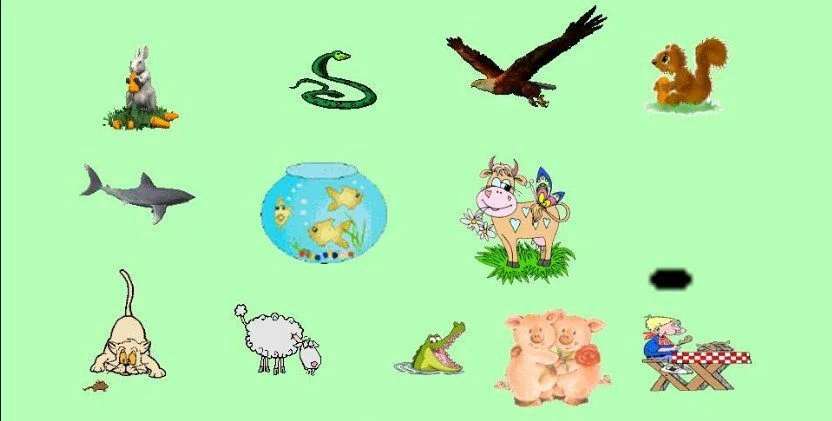

Los heterótrofos no pueden producir su propio alimento, por lo que deben comer o absorberlo. Por esta razón, los heterótrofos son también conocidos como los consumidores . Los consumidores incluyen todos los animales y hongos y muchos protistas y bacterias.
Aquí se analiza la forma en que obtienen la energía y se dividen en tres grandes categorías: Saprobios, detritívoros y organismos o animales depredadores.
Son los agentes principales de la descomposición y recirculación de toda materia orgánica del suelo, son aquellos que absorben los nutrientes de organismos muertos, sea por excrementos o alguna de sus partes. Los ejemplos representativos serían la mayoría de hongos y bacterias, insectos, lombrices…etc
Son aquellos que absorben los nutrientes de organismos muertos, sea por excrementos o alguna de sus partes, diferenciándose de los saprobios porque incorpora los nutrientes succionando, o por medio de roer o cortar el material nutritivo.
Son aquellos que se alimentan de todo un organismo o partes (Se alimentan de una presa como los leones, águilas, tiburones…etc). Y tienen diferentes divisiones atendiendo al alimento que pueden ser:
